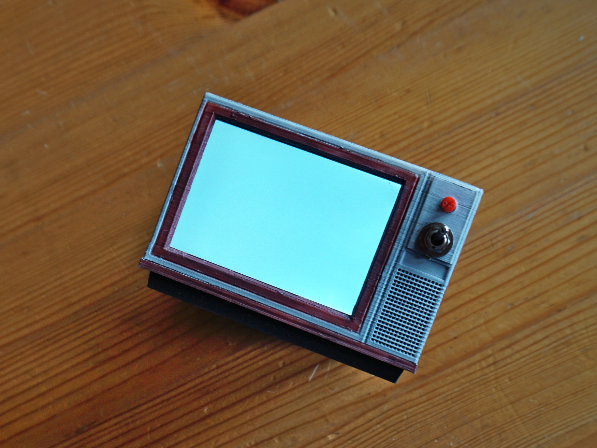
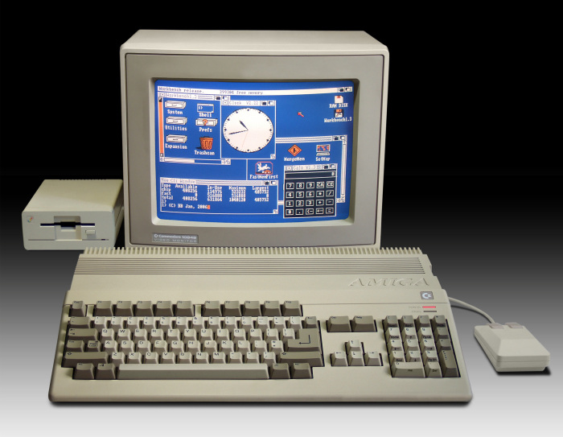
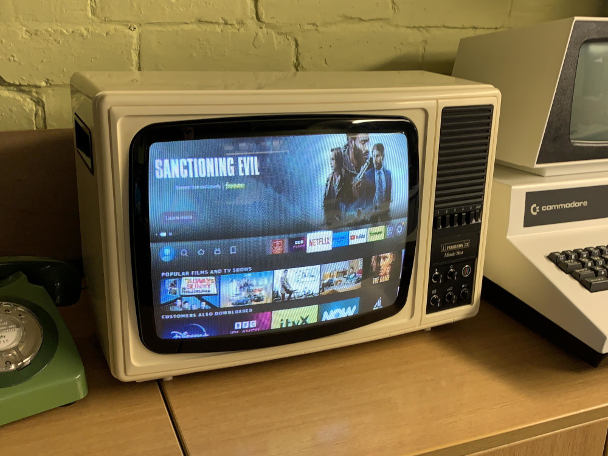
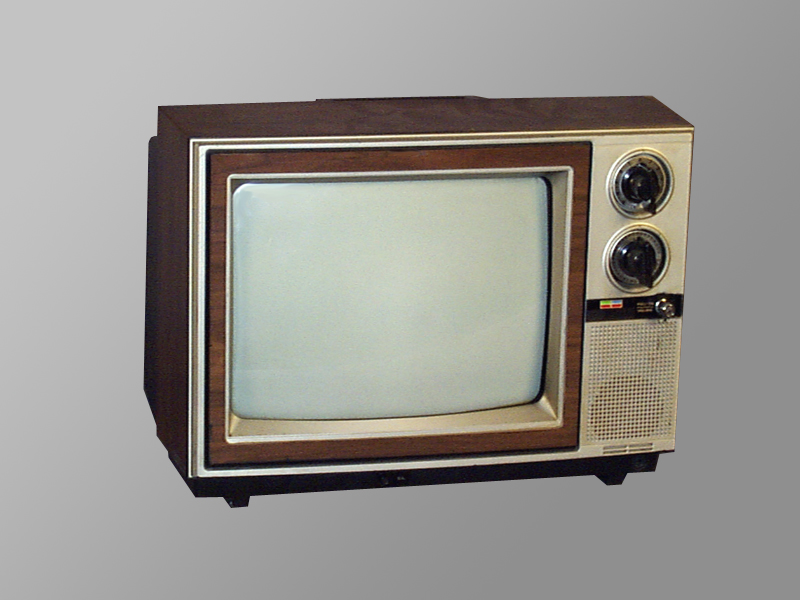
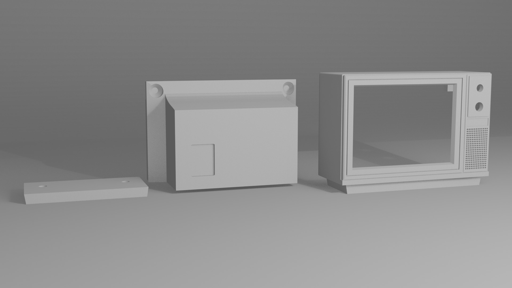
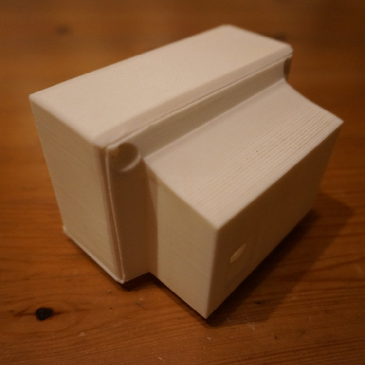
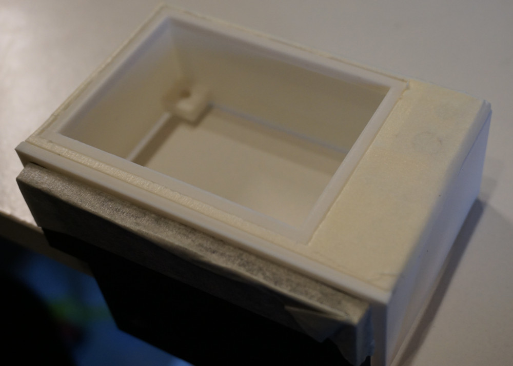
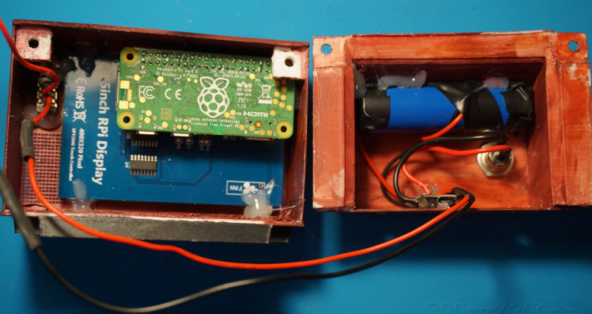
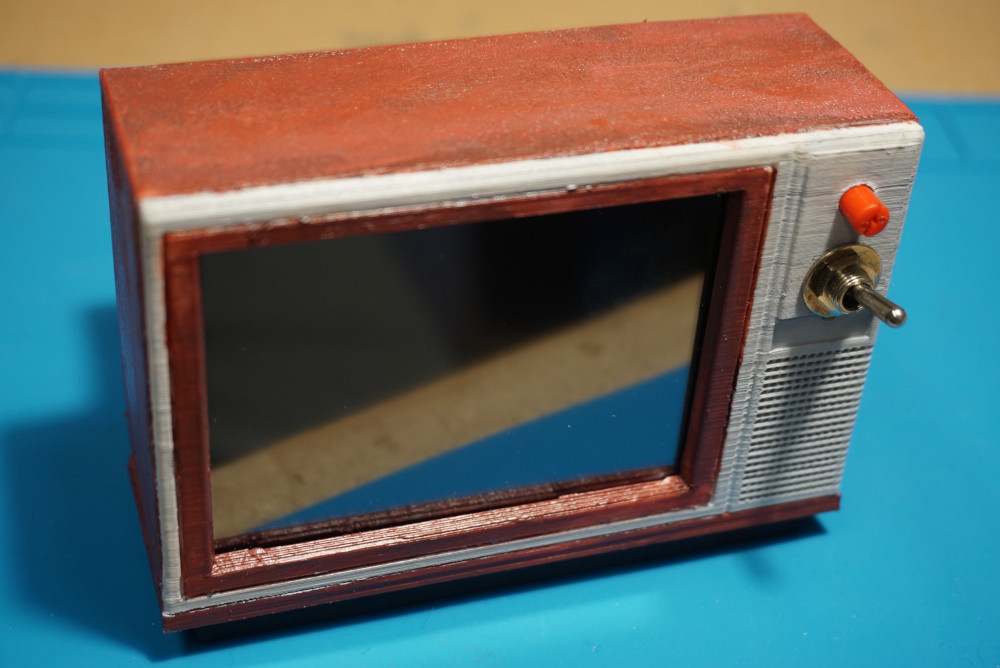
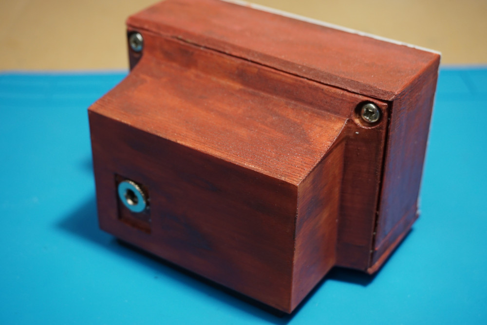

HVS/1
December 2024A retro TV themed, functional case for a Raspberry Pi Pico.
Electronics
Modelling
HVS/1
Introduction
There is something about vintage tech that fascinates people, including myself. It was an era where technology meant magic and was thought to have no bounds. In the 80s, getting some electronic gadget meant being able to listen to music wherever you wanted, watching shows and movies whenever you wanted, doing things in a more productive way...
It was a different era and it is quite hard to put the finger exactly on what is so captivating about it. However, one of the most appealing characteristics of old tech is for sure it's aesthetic. Despite everything being minimalistic, square, beige or otherwise boring, it stands out and has character without being flashy.


A particularly quirky design is that of Cathode Ray Tube displays, also known as CRTs. These types of displays were pretty much the rule and state of the art up until the year 2000 and, for many, are an icon of the retro theme.
I have always wanted to own a CRT TV but never had the space to keep it, so why not make a smaller one?
Brainstorming
I did not plan to make a CRT design from scratch, I wanted something that already looked good and just needed to be modeled and adapted. There are plenty of different CRT models and designs, but I ended up choosing the Hitachi CT series, more precisely the CT 1342 or 1302. They all looked particularly cool and woodgrain is something that I wanted to achieve on the replica as well.

Aside from making it small, I wanted to make it more than a regular CRT TV set with just analog inputs. I thought about fitting a small computer inside that could play back video on the go or run some lightweight graphical applications (Mainly xscreensaver), so I chose the Raspberry Pi Zero 2W, which is a really simple SBC that can run Raspberry Pi OS and is meant for embedded devices and IoT applications.
Bill of Materials
| Item | Qty. | Price/Unit (EUR) | Total |
|---|---|---|---|
| Raspberry Pi Zero 2W + GPIO pin headers | 1 | 26,28 | 26,28 |
| 3.5 Touch sensitive LCD display | 1 | 9,24 | 9,24 |
| T6845-C (1 Unit, USB-C) | 1 | 1,21 | 1,21 |
| Toggle switch (10 Units, ON ON) | 1 | 2,67 | 2,67 |
| M3 Bolt and nut set (480 Units) | 1 | 6,92 | 6,92 |
| 24/26 AWG solid core wire (5m) | 4 | 2,11 | 8,44 |
| 18650 3.7V 3500mAh battery (2 Units) | 1 | 10,38 | 10,38 |
| Total: | 65,14 |
Implementation
Modelling
First, I got the headers soldered to the Raspberry Pi and fitted the 3.5 inch screen to take some measurements. The size of the model would be dictated mainly by the dimensions of the display; the rest of the electronics are not as bulky and can be fitted inside more easily.
Once the measures were taken, I set out to model a replica on Blender. The final result is composed of 3 parts, a front face, a back plate and a bottom that would have to be glued and that would serve as extra support.

All the parts were glued and dremeled as needed. Everything was put together once to test how the final model would look and once all adjustments had been made, I moved on to the next part.

Painting
To make it look more like the real thing some color was needed. I used acrylic to paint the outer surface of the TV, trying to mimic woodgrain and plastic colors as well as possible. To avoid accidentally mixing colors i used masking tape to cover parts that I did not want painted.

The acrylic paint was applied directly to the plastic surface of the model, which turns out to be quite bad in terms of adherence. Since then, I have painted some other prints with acrylic and using some primer for plastics promotes better adherence and, overall, yields a better finish than painting raw plastic.
Electronics
I set up the Raspberry Pi with Raspberry Pi OS and configured the kernel to use the 3.5" GPIO screen as a main display. Some SPI overclocking can be made in order to get some better performance out of the screen in terms of colors, refresh rate and resolution. I gave it a quick tweak without reaching the point where the colors start getting distorted.
Once the Raspberry Pi and screen were working, I moved on to the power supply section and charging circuits. The Raspberry Pi takes 5V from an micro USB port to power both itself and the screen. I took advantage of the T6845-C to provide both 5V to the Raspberry and charge a 18650 3.7V battery that would power the TV when no charger was available. I also used a barrel jack to serve as a 5V in to charge the display. In retrospect I should have used the micro USB input provided with the T6845-C, but the barrel jack is what I went with. I made an micro USB cable to connect the T6845-C board to the Raspberry Pi.

With everything hooked together, I added a power switch and a potentiometer for future use (Perhaps for a potential speaker). After verifying everything worked fine and that the battery was charging, I fitted everything inside of the case and screwed it all together.
Results
Here is the final result with xscreensaver running:

